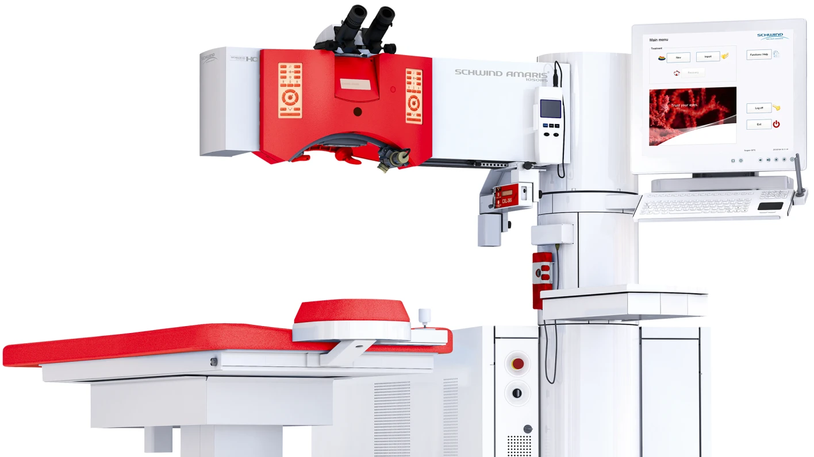
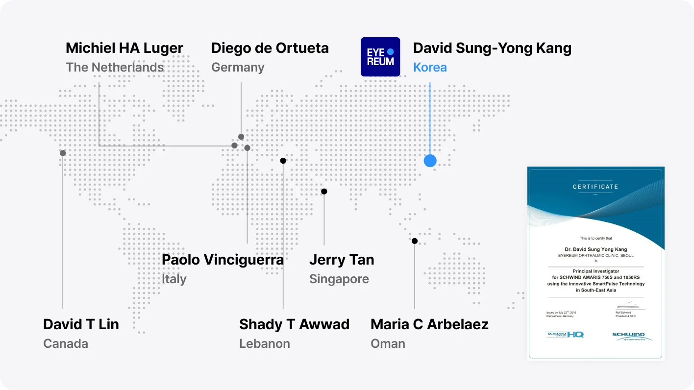
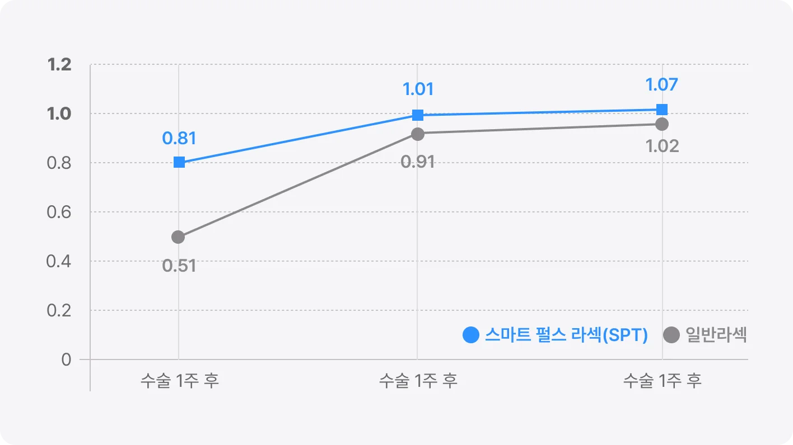
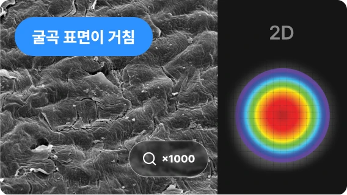
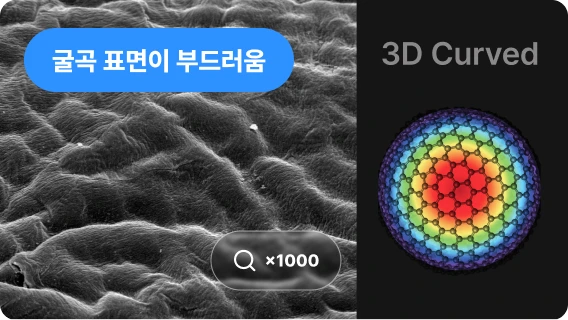
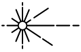
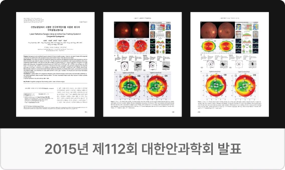
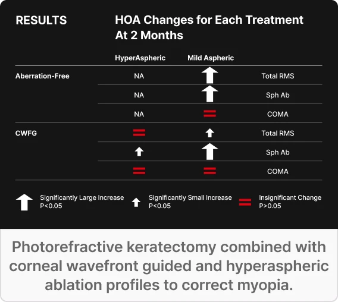

1 마이크론 단위의 정밀수술로 진정한 1:1 각막지형 맞춤수술 실현
아마리스레드1050RS SmartSurfACE는 정밀한 레이저 조사와 의료진의 맞춤 수술 설계를 통해 환자 별 각막 특성을 반영한 커스텀아이즈(CustomEyes)을 구현하는 엑시머 레이저 시스템입니다.
아마리스레드1050RS SmartSurfACE는 정밀한 레이저 조사와 의료진의 맞춤 수술 설계를 통해 환자 별 각막 특성을 반영한 커스텀아이즈(CustomEyes)을 구현하는 엑시머 레이저 시스템입니다.

아마리스 레이저의 SmartSurfACE(스마트펄스) 알고리즘 개발 프로젝트에는 한국을 비롯해 이탈리아, 독일, 네덜란드, 캐나다, 싱가포르 등 8개국의 안과 전문의들이 참여했습니다. 한국에서는 아이리움안과 강성용 원장이 유일하게 공동개발자로 참여했습니다. 해당 기술은 현재 아이리움안과의 아마리스레드 1050RS 장비에 적용되어 있습니다.

스마트 펄스 테크놀로지(SmartSurfACE)는 각막의 실제 곡률을 반영한 3차원 레이저 알고리즘으로, 수술 후 각막 표면을 더욱 매끄럽게 형성해 빠른 시력
회복과 시력의 질 향상에 도움을 주는 기술입니다.
평균 -7디옵터 이상의 환자들 대상으로 SmartSurfACE(스마트펄스)를 적용한 커스텀아이즈 라섹 수술 결과, 수술 1주 후 시력 회복 속도는 기존
방식보다 1.6배 빨랐으며, 2주 후 평균 시력 1.0을 달성했습니다.

* 출처 : 2015 APAO 아이리움 SPT 학회 발표
* 타 레이저와의 수술 후 각막 표면 비교 - 아이리움안과/연세대 세브란스 공동,
ⓒEYEREUM, All rights reserved.

일반 아마리스

SmartSurfACE(스마트펄스)
정밀한 7차원
안구추적 시스템

1050Hz 초고속 레이저로 수술 시간과 열 손상 최소화
각막두께 실시간 측정, SCC(주시점 보정)모드로 고 정밀 수술
각막 절삭량을 줄인
플라잉-스팟 레이저
아마리스 레드 1050RS는 7차원 안구추적 시스템과 1050Hz 레이저를 통해 안구진탕 환자의 눈 움직임을 실시간으로 추적하여 정밀한 맞춤 시력교정을 가능하게 합니다.

아이리움안과 강성용 원장은 SPT 기술을 개발한 독일 SCHWIND의 Medical Consultant로 활동하며, 아마리스 레이저를 적용한 CustomEyes
수술의 고위수차 감소 효과를 SCI 논문을 통해 과학적으로 입증해 왔습니다.
SPT 공동개발 경험과 40,000안 이상의 CustomEyes 임상 경험을 바탕으로 환자의 눈 상태에 맞춘 정밀한 시력교정수술을 시행하고 있습니다.

기존 방식 대비 커스텀아이즈 수술 결과(Comparison of clinical outcomes between wavefront-optimized versus corneal wavefront-guided transepithelial photorefractive keratectomy for myopic astigmatism.),J Cataract Refract Surg. 2017 Feb;43(2):174-182.
각막강화술 결합 커스텀아이즈 안전성(Effect of accelerated corneal crosslinking combined with transepithelial photorefractive keratectomy on dynamic corneal response parameters and biomechanically corrected intraocular pressure measured with a dynamic Scheimpflug analyzer in healthy myopic patients), J Cataract Refract Surg. 2017 Jul;43(7):937-945.
근시 교정을 위한 각막 Wavefront-Guided 및 Hyper-Aspheric 절삭 프로파일 적용 라섹(Photorefractive keratectomy combined with corneal wavefront-guided and hyper-aspheric ablation profiles to correct myopia), J Cataract Refract Surg. 2016 Jun;42(6):890-8.

* 2016, Journal of Cataract & Refractive Surgery. EYEREUM Eye Clinic, Yonsei University College of Medicine